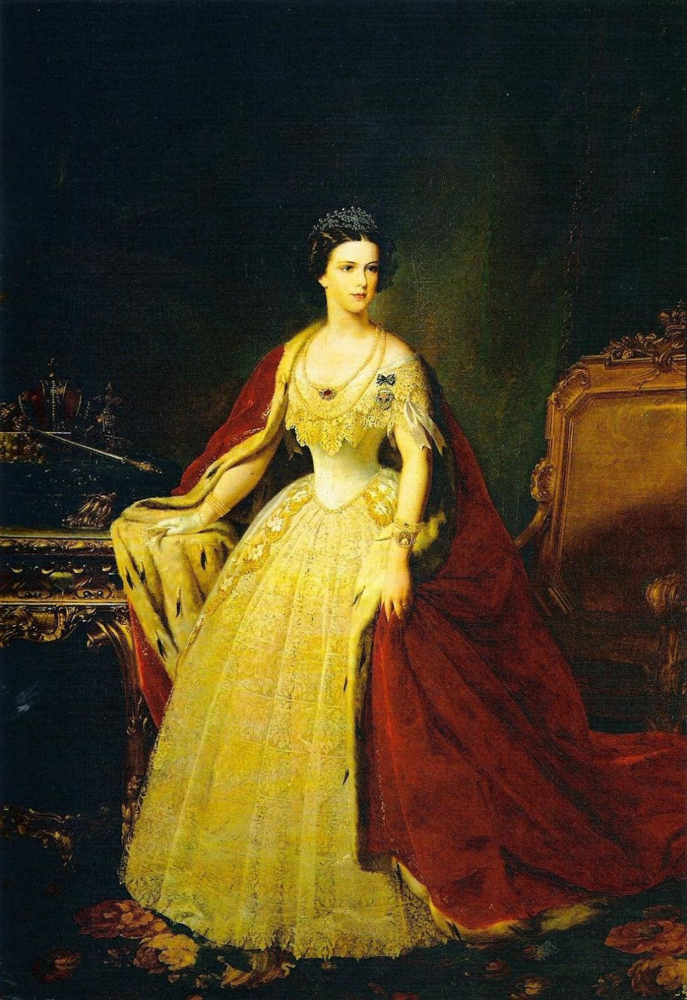
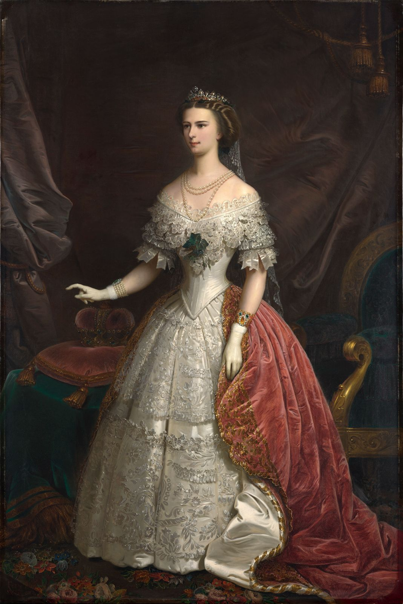

Portrete celebre ale împărătesei Elisabeta
Elisabeta În 1965
Portret realizat de Franz Xavier Winterhalter
Elisabeta, ducesă de Bavaria
Artist necunoscut, 1854
Elisabeta, călare în fața Palatului Possenhofen
Portret realizat de Karl Theodor von Piloty și Franz Adam
Prințesa Elisabeth a Bavariei cu miniatura portretului lui Franz Joseph
Artist necunoscut, 1855
Împărăteasa Elisabeta. Pictura a fost realizată pentru împăratul tânăr, Franz Joseph, cu ocazia logodnei cu Sisi
Pictură realizată de Franz Schrotzberg
Împărăteasa Elisabeta a Austriei
Anton Einsle, 1856
Elisabeta, 1860. Colecția Princely, Vaduz-Viena
Franz Schrotzberg, 1860
Portret al împărătesei Elisabeta, ducesă de Bavaria
Eduard Kaiser, 1861

Împărăteasa Elisabeta. Pictură nedatată. Galeria de Artă Contemporană, Palazzo Pitti, Florența, Italia
Portret realiza de Giuseppe Sogni
Împărăteasa Elisabeta, 1863
Portret realizat de Franz Russ, 1863
Împărăteasa Elisabeta, îmbrăcată în rochia de încoronare ca și regină a Ungariei, 1867
Portret realizat de Franz Russ, 1867
Elisabeta de Bavaria, soția împăratului Franz Joseph al Austriei, 1856
Portret realizat de Franz Russ, 1856

Împărăteasa Elisabeta, 1869. Galeria din Palatul Belvedere, Viena
Portret realizat de Franz Russ, 1869

Împărăteasa Elisabeta, 1865
Portret realizat de Josef Kriehuber, 1865
Sisi îmbrăcată în rochia de încoronare ca și împărăteasă a Ungariei, 1867
Artist necunoscut, 1867
Împărăteasa Elisabeta, 1854. Muzeu din Viena, Karlsplatz
Artist necunoscut, 1854
Împărăteasa Elisabeta, 1858
Portret realizat de Johann Nepomuk Meyer, 1858